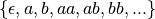
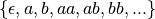
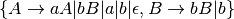
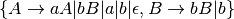
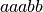
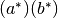
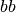

Fast submatch extraction¶
by Ulya Trofimovich
This article is an informal description of the novel algorithm used in re2c-1.0 to implement submatch extraction. It tries to explain what is it so complex about this seemingly simple problem, why re2c has such a strange interface, and how tags are related to the familiar capturing groups used by other regular expression engines.
Parsing vs recognition¶
Regular expressions is a syntactic notation for describing sets.
Usually it is assumed that these sets contain strings — sequences of characters over some fixed alphabet.
This is known as the language interpretation of regular expressions.
For example, denotes the set of all strings that consist of a possibly empty sequence of  followed by a possibly empty sequence of
followed by a possibly empty sequence of  :
,
where
:
,
where  is a special symbol that means “empty string”.
is a special symbol that means “empty string”.
Regular expressions is one possible way of describing regular languages —
the class of languages generated by Type 3 grammars in the Chomsky hierarchy.
For every regular expression there is an equivalent Type 3 grammar that generates the same language and vice versa.
For example, the above language can be generated by Type 3 grammar
with start symbol  and production rules
.
and production rules
.
It is often said that regular expressions are used for matching strings.
But what exactly is matching?
In the narrow sense of the word it means recognition:
one must decide if the given string belongs to the language denoted by regular expression.
For example,  belongs to our example language, but does not.
In the broad sense of the word matching means parsing:
not only one must solve the membership problem,
but also find the derivation — the sequence of grammar rules that transform start symbol into the input string.
For example, can be derived as  .
Derivation gives us more information than a simple membership test,
because it reconstructs the grammatical structure of the input string.
.
Derivation gives us more information than a simple membership test,
because it reconstructs the grammatical structure of the input string.
There is no exact analogue to “derivation” in terms of regular expressions, as their primary application is recognition, not parsing. In lexical analysis lexemes usually denote primitive elements without inner structure or with trivial structure that can be easily retrieved by the programmer. Yet sometimes it is convenient to know which part of the input string corresponds to a particular part of the regular expression — the problem known as submatch extraction. In our example one might want to know the substrings corresponding to and ; this is usually denoted with the help of capturing parentheses: . Submatch extraction is similar to partial parsing: in order to find submatch boundaries one must find the right “path” through the regular expression.
In terms of NFA “derivation” means “path”.
how the given string can be derived from the language grammar. In terms of regular expressions this means finding out how input characters map on the different parts of the regular expression — the problem known as submatch extraction.
For example, string belongs to the above language;
it can be derived as .
In terms of regular expressions,
the substring corresponds to the subexpression;  corresponds to .
Each group can be further split into distinct repetitions,
and continuing in this manner we can track down the “origin” of each character.
In practice this is not necessary: one usually needs only the coarse-grained structure of the input —
a couple of high-level components marked by capturing parentheses.
In the narrow sense, matching means recognition: given a regular expression and a string, one must tell if the string belongs to the set of strings denoted by the regular expression — the regular language. Recognition problem is usually solved by converting the regular expression to a nondeterministic finite automaton (NFA) and simulating the moves of the automaton on the input string. NFA simulation takes linear time, but since the automaton is nondeterministic, one has to track many possible paths simultaneously. Alternatively, one can convert NFA to an equivalent deterministic finite automaton (DFA), which also runs in linear time, but is much faster then NFA — there is only one possible path to track. The conversion procedure (also known as determinization) is quite complex; in some cases it may take exponential time and generate a very large DFA. This is not a problem for compiling regular expression engines like re2c, since they perform determinization ahead of time.
However, regular expression libraries perform determinization at runtime
Therefore all regular expression engines may be div
If determinization
In the broad sense, matching means parsing: besides recognizing the input string one must also tell how it can be derived from the regular expression. The term “derivation” is usually
A simple NFA-based solution¶
The difficulty with DFA¶
Dangerous trailing contexts¶
The challenge of implementing submatch extraction in lexer generators like re2c is not immediately obvious.